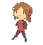
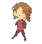

The Last of Us Part 1 es un videojuego de acción de disparos en tercera persona ambientado en un mundo postapocalíptico lleno de infectados por una mutación genética en el hongo Cordyceps. Fue desarrollado por la empresa Naughty Dog a modo de remake del juego del mismo nombre de 2013 y fue lanzado el 2 de Septiembre de 2022 exclusivamente para Playstation 5 y posteriormente para PC.
The Last of Us debe gran parte de su éxito a su historia, que cuenta el viaje de un hombre devastado por su pasado llamado Joel Miller que debe entregar a una niña llamada Ellie a través de un mundo repleto de estos infectados a un puesto de investigación perteneciente a un grupo rebelde llamado "Las Luciérnagas".
Previo a esto, Joel sobrevivía junto a su amiga Tess en una zona de cuarentena precaria oprimida por el gobierno militar local. Los 2 sobrevivientes iban a hacer un trato con un hombre llamado Robert, el cual lo arruina al vender las armas a Las Luciérnagas. Al pretender recuperar la mercancía del trato, se encuentran con Marlene, líder del grupo rebelde, la cual acepta completar el trato de Robert a cambio de que Joel y Tess lleven a Ellie, una niña huérfana de 14 años, a su base ubicada en una universidad, ya que la niña podría tener la clave para la salvación de la plaga del Cordyceps.
El juego consta de una amplia variedad de armas, que se obtienen a lo largo de nuestra aventura. Cada una es útil para un tipo particular de situación y cantidad de enemigos. En total son 9:
| Armas | Especialidad |
| Pistola | No gastar balas en armas más importantes. |
| Revólver | Ideal con Chasqueadores al ser lenta pero fuerte. |
| Fusil de francotirador | La mejor arma contra humanos. |
| Arco | Ideal para matar en sigilo. |
| Escopeta | La mejor arma del juego, que puede eliminar a varios de un tiro. |
| Recortada | Al ser más débil que la escopeta, es ideal para salvar munición de ella. |
| Pistola con mira | Bastante inútil, solo úsala si no hay otra opción. |
| Lanzallamas | Para grandes hordas de infectados. |
| Rifle de asalto | Es más poderosa que la escopeta, pero se halla al final del juego. |

 
Más información del juego
Contáctenos

Más información del juego
Contáctenos